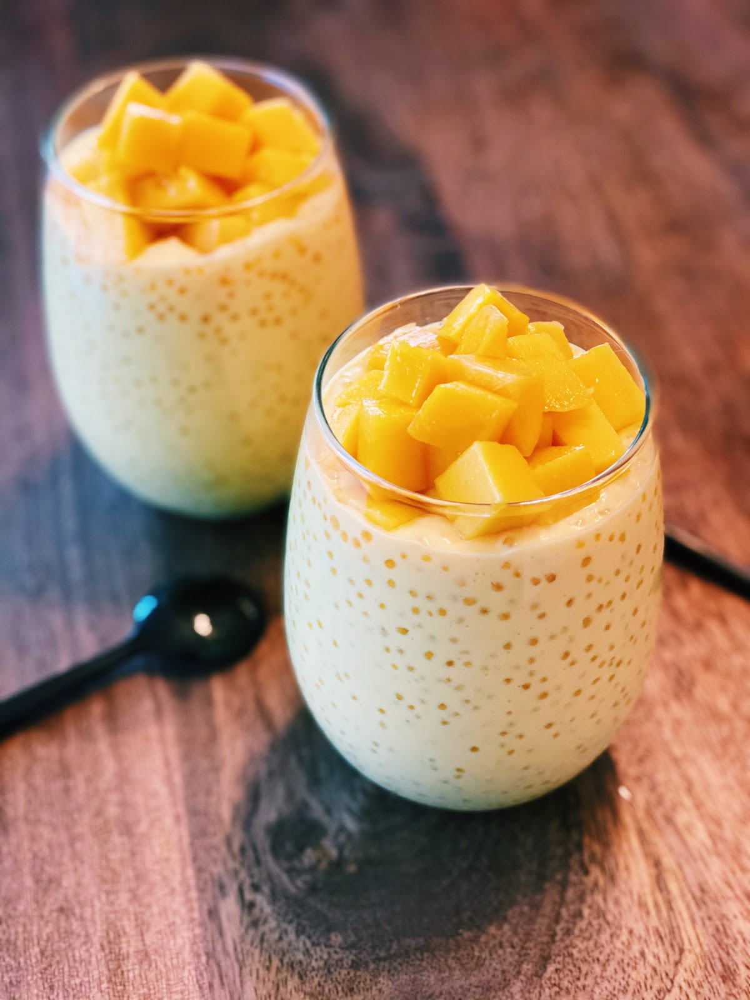

Mango Bango Recipe

Description
Mango Bango, a creamy dessert made of sweet mangoes and chewy tapioca pearls.
This is hands down one of my favorite desert of all times because
it’s so easy to make and it’s so delicious.
Ingredients
- 4 large ripe mangos, diced
- 1/4 tapioca pearls(cooked)
- 2 250ml packs all purpose cream
- ½ - ¾ cup condensed milk, depending on the sweetness you prefer
Steps
- Combine all the ingredients in a large bowl and mix well.
- Chill in the fridge for 4 hours before serving
- Enjoy!